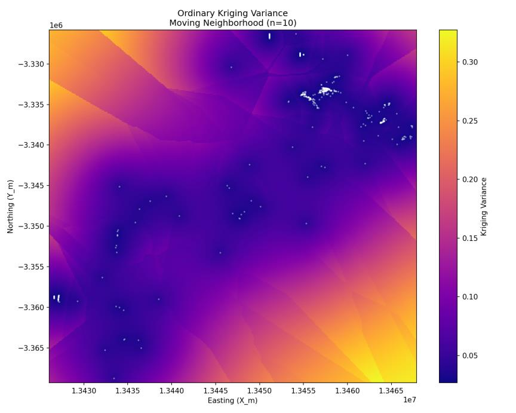

Chapter 9 · 425 of 1,333 with measurable gold · co-kriging and simulation as the way out
Strictly preliminary
Good enough to pick exploration targets, not to classify reserves. Co-kriging on Gd/La and sequential simulation as next steps, risks included.
Of 1,333 records, 425 samples with measurable gold remained, 41.6 %. Everything this analysis claims rests on those 425, and that is why the verdict is strictly preliminary: the maps serve to choose where to explore, not to classify reserves. This chapter closes with what the map can do, what it cannot, the four cautions, and the two ways out that would use the information kriging left on the table.
What the map can do
Point at targets. The northeast nucleus, above 1.4 in log10, and the southwest one, between 1.2 and 1.4, appear with both kriging methods, coincide with the clusters of the exploratory analysis and with the basement units of chapter 5. And the kriging variance says where sampling is needed before believing anything: above 0.20, in corners and edges, and in ordinary kriging above all in the southwest corner and the northwest margins.

What it cannot do
Classify reserves. Three reasons, all measured in the previous chapters:
- The smoothing. Both methods regress the extremes towards the mean: high grades are underestimated and waste is overestimated. For scheduling production or modelling geometallurgy, that is a serious flaw.
- The tails. The standardised errors reach 6 when beyond 3 they should be exceedingly rare: at specific sites the real error is far larger than the kriging variance promises.
- The base. 425 samples over 62,000 km², clustered, with 73 % of them less than 0.22 km from their neighbour: the starting uncertainty is high whatever you do.
The four cautions
- Integrity. Cleaning the duplicates was necessary to avoid manufacturing short-scale variance, and it cost two thirds of the file: from 1,333 records to 1,020 locations and to 425 with gold.
- Global model. Gold is controlled by lithology (Nxcal, Nhunt, Nhuyb), but the domains held fewer than 50 samples each. The global model is stable and, in exchange, smooths across geological boundaries: distinct populations were merged for robustness.
- Variography. The Gaussian implies very high continuity over short distances, which in gold is often optimistic; the southeast direction was unstable because of sparse sampling. The 4.5 km range is a ceiling, and local variability is probably higher.
- Estimation. Ordinary kriging with 10 neighbours is preferred for adapting to the trend, but the RMSE of 0.230 cannot tell it from simple kriging, and the knobs barely move it.
Way out 1: co-kriging, because gold does not travel alone
Co-kriging estimates the primary variable by combining its own samples with those of one or more secondary variables spatially correlated with it. Besides each variable's variogram it uses cross-variograms, and to keep the whole consistent a linear model of coregionalisation is fitted. It is especially useful with heterotopic data, when the secondary variable is measured at many more sites than the primary: it exploits that abundance instead of discarding it.
Here it makes sense because of what chapter 4 showed: gold associates with gadolinium (r ≈ +0.472, n = 45) and walks away from lanthanum (r ≈ −0.338, n = 90), and the rare earths are measured in many more samples than gold (the Gd-Pr relationship was measured with 203). Where gold is scarce, the rare earths could carry signal. The risk, in the same breath: a poorly modelled cross-correlation adds noise instead of information, and with n = 45 for the Au-Gd pair the correlation has to be validated before it is used.
Way out 2: simulation, to stop looking at a single map
Kriging is a low-pass filter: it gives the best local average and, in exchange, erases the deposit's real variability. Geostatistical simulation generates many equally probable realisations that reproduce the histogram and the variogram of the data, roughness and extremes included. Moving from one average map to an ensemble of 50 or 100 scenarios makes it possible to compute, block by block, the probability of exceeding a cut-off grade, which is the question a mining decision actually asks.
Verdict
The maps identify valid exploration targets, and they identify them with their uncertainty alongside. But with 425 usable samples out of 1,333, these estimates should not be used to classify reserves without an infill campaign that lowers the spatial uncertainty where the variance asks for it. That is what preliminary means, and saying so is part of the result.